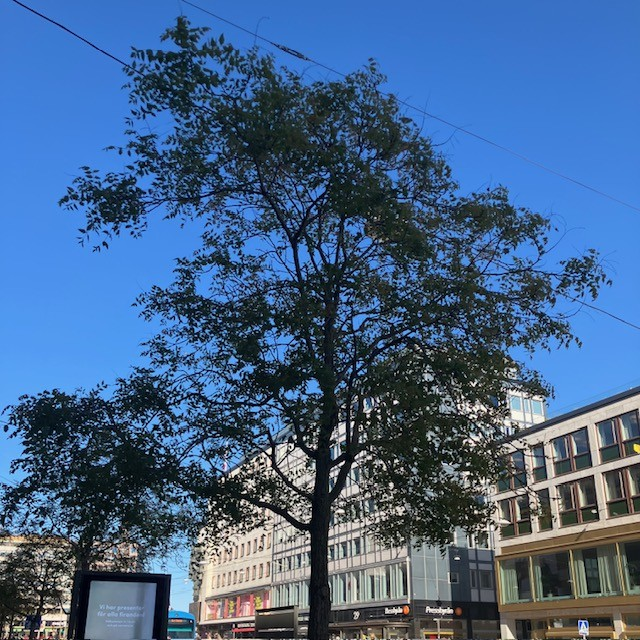

<!DOCTYPE html>
<html>
<head>
    
    <meta http-equiv="content-type" content="text/html; charset=UTF-8" />
    
        <script>
            L_NO_TOUCH = false;
            L_DISABLE_3D = false;
        </script>
    
    <style>html, body {width: 100%;height: 100%;margin: 0;padding: 0;}</style>
    <style>#map {position:absolute;top:0;bottom:0;right:0;left:0;}</style>
    <script src="https://cdn.jsdelivr.net/npm/leaflet@1.9.3/dist/leaflet.js"></script>
    <script src="https://code.jquery.com/jquery-3.7.1.min.js"></script>
    <script src="https://cdn.jsdelivr.net/npm/bootstrap@5.2.2/dist/js/bootstrap.bundle.min.js"></script>
    <script src="https://cdnjs.cloudflare.com/ajax/libs/Leaflet.awesome-markers/2.0.2/leaflet.awesome-markers.js"></script>
    <link rel="stylesheet" href="https://cdn.jsdelivr.net/npm/leaflet@1.9.3/dist/leaflet.css"/>
    <link rel="stylesheet" href="https://cdn.jsdelivr.net/npm/bootstrap@5.2.2/dist/css/bootstrap.min.css"/>
    <link rel="stylesheet" href="https://netdna.bootstrapcdn.com/bootstrap/3.0.0/css/bootstrap-glyphicons.css"/>
    <link rel="stylesheet" href="https://cdn.jsdelivr.net/npm/@fortawesome/fontawesome-free@6.2.0/css/all.min.css"/>
    <link rel="stylesheet" href="https://cdnjs.cloudflare.com/ajax/libs/Leaflet.awesome-markers/2.0.2/leaflet.awesome-markers.css"/>
    <link rel="stylesheet" href="https://cdn.jsdelivr.net/gh/python-visualization/folium/folium/templates/leaflet.awesome.rotate.min.css"/>
    
            <meta name="viewport" content="width=device-width,
                initial-scale=1.0, maximum-scale=1.0, user-scalable=no" />
            <style>
                #map_550cd7f892384b59a2933deb90693eb6 {
                    position: relative;
                    width: 100.0%;
                    height: 100.0%;
                    left: 0.0%;
                    top: 0.0%;
                }
                .leaflet-container { font-size: 1rem; }
            </style>
        
    <script src="https://cdnjs.cloudflare.com/ajax/libs/leaflet.markercluster/1.1.0/leaflet.markercluster.js"></script>
    <link rel="stylesheet" href="https://cdnjs.cloudflare.com/ajax/libs/leaflet.markercluster/1.1.0/MarkerCluster.css"/>
    <link rel="stylesheet" href="https://cdnjs.cloudflare.com/ajax/libs/leaflet.markercluster/1.1.0/MarkerCluster.Default.css"/>
</head>
<body>
    
    
<!-- Leaflet LocateControl CSS & JS -->
<link rel="stylesheet" href="https://unpkg.com/leaflet.locatecontrol/dist/L.Control.Locate.min.css" />
<script src="https://unpkg.com/leaflet.locatecontrol/dist/L.Control.Locate.min.js"></script>

<script>
document.addEventListener("DOMContentLoaded", function () {
    var map = window._leaflet_map;

    L.control.locate({
        position: 'topleft',
        strings: {
            title: "Visa min plats"
        },
        locateOptions: {
            enableHighAccuracy: true
        }
    }).addTo(map);
});
</script>
    
<script>
document.addEventListener("DOMContentLoaded", function() {
    // Hämta Leaflet-kartan (den finns som 'map_XXXXX' i Folium)
    window.map = Object.values(window).find(v => v instanceof L.Map);

    function onLocationFound(e) {
        var radius = e.accuracy / 2;

        var userIcon = L.divIcon({
            html: '<div style="font-size: 36px;">🚶‍♂️</div>',  
            className: "",
            iconSize: [36, 36]
        });

        var userMarker = L.marker(e.latlng, {icon: userIcon}).addTo(window.map)
            .bindPopup("Du är här").openPopup();

        L.circle(e.latlng, radius).addTo(window.map);
    }

    function onLocationError(e) {
        alert("Kunde inte hämta plats: " + e.message);
    }

    if (window.map) {
        window.map.on('locationfound', onLocationFound);
        window.map.on('locationerror', onLocationError);

        // Starta platsförfrågan
        window.map.locate({setView: false});
    } else {
        console.log("Kunde inte hitta Leaflet-kartan.");
    }
});
</script>
    
            <div class="folium-map" id="map_550cd7f892384b59a2933deb90693eb6" ></div>
        
</body>
<script>
    
    
            var map_550cd7f892384b59a2933deb90693eb6 = L.map(
                "map_550cd7f892384b59a2933deb90693eb6",
                {
                    center: [59.3293, 18.0686],
                    crs: L.CRS.EPSG3857,
                    ...{
  "zoom": 15,
  "zoomControl": true,
  "preferCanvas": false,
}

                }
            );

            

        
    
            var tile_layer_65e27ce7509ef74341f53965b229c0d3 = L.tileLayer(
                "https://{s}.basemaps.cartocdn.com/rastertiles/voyager/{z}/{x}/{y}{r}.png",
                {
  "minZoom": 0,
  "maxZoom": 20,
  "maxNativeZoom": 20,
  "noWrap": false,
  "attribution": "CartoDB",
  "subdomains": "abcd",
  "detectRetina": false,
  "tms": false,
  "opacity": 1,
}

            );
        
    
            tile_layer_65e27ce7509ef74341f53965b229c0d3.addTo(map_550cd7f892384b59a2933deb90693eb6);
        
    
            var marker_cluster_464142b385e9058cda60c2ddb77391be = L.markerClusterGroup(
                {
}
            );
        
    
            marker_cluster_464142b385e9058cda60c2ddb77391be.addTo(map_550cd7f892384b59a2933deb90693eb6);
        
    
            var marker_776ceb14c60a3484f62956db029016ee = L.marker(
                [59.33210074001757, 18.07150116288134],
                {
}
            ).addTo(map_550cd7f892384b59a2933deb90693eb6);
        
    
            var div_icon_e865fa54fcc9153881f717079d2b6a51 = L.divIcon({
  "html": "\n        \u003cdiv style=\"background-color: #91D34C; color: white;\n                        border-radius: 50%; width: 28px; height: 28px;\n                        text-align: center; line-height: 28px;\n                        font-weight: bold;\"\u003e1\u003c/div\u003e\n        ",
  "className": "empty",
});
            marker_776ceb14c60a3484f62956db029016ee.setIcon(div_icon_e865fa54fcc9153881f717079d2b6a51);
        
    
        var popup_44b53751b9ae2d0111d2fcd0fb10856c = L.popup({
  "maxWidth": 320,
});

        
            
                var html_d91bff45b6f24c157c866bc4b30f4439 = $(`<div id="html_d91bff45b6f24c157c866bc4b30f4439" style="width: 100.0%; height: 100.0%;">     <div style="max-height: 500px; width: 280px; overflow-y: auto; padding: 10px;">                  <h2 style='margin-bottom: 10px;'>1. Kungsträdgården, vid dammen</h2>         <h4 style='color: darkgreen; margin-top: 0;'>Prydnadskörsbär, Prunus ’Accolade’</h4>         <div style='font-size: 15px; line-height: 1.6; text-align: justify;'>       <div style="font-family: Arial, sans-serif; font-size: 15px; line-height: 1.6; text-align: left;">      Det är inte varje dag man får promenera med huvudet i fluffiga rosa moln. Varje vår blir det en nyhet i hela landet när körsbärsträden i Kungsträdgården blommar. Stockholmare och turister vallfärdar för att fotografera denna blomsterfägring av vackert rosa, halvfyllda blommor i slutet av april.      <p>Körsbärsträden planterades 1998, i dubbla rader på båda sidorna av dammen. Träden är en hybrid mellan bergkörsbär (Prunus sargentii) och vårkörsbär (Prunus subhirtella). Den har en smalare krona i ungdomen men blir bredare med tiden, för att till slut få en nästan flat kronuppbyggnad, där grenarna hänger nedåt.</p>      <p>Andra platser i staden där du kan se prydnadskörsbär är på Luma torg i Hammarby Sjöstad.</p>      </div>      </div>         <div style="margin-top: 10px; display: flex; justify-content: center; gap: 8px; flex-wrap: wrap;">             <audio id="audio1" src="1.m4a"></audio>             <a href="javascript:document.getElementsByClassName('leaflet-marker-icon')[15].click();"               style="background-color: #91D34C; color: white; padding: 8px 12px;                       text-decoration: none; border-radius: 6px; display: inline-block;">               ← Föregående             </a>             <a href="javascript:document.getElementById('audio1').play();"               style="background-color: #FFA500; color: white; padding: 8px 12px;                       text-decoration: none; border-radius: 6px; display: inline-block;">               Lyssna             </a>             <a href="javascript:document.getElementsByClassName('leaflet-marker-icon')[1].click();"               style="background-color: #91D34C; color: white; padding: 8px 12px;                       text-decoration: none; border-radius: 6px; display: inline-block;">               Nästa →             </a>         </div>     </div>     </div>`)[0];
                popup_44b53751b9ae2d0111d2fcd0fb10856c.setContent(html_d91bff45b6f24c157c866bc4b30f4439);
            
        

        marker_776ceb14c60a3484f62956db029016ee.bindPopup(popup_44b53751b9ae2d0111d2fcd0fb10856c)
        ;

        
    
    
                marker_776ceb14c60a3484f62956db029016ee.setIcon(div_icon_e865fa54fcc9153881f717079d2b6a51);
            
    
            var marker_712bad044c0ccaed249adae11120417e = L.marker(
                [59.33158633411901, 18.07190885862338],
                {
}
            ).addTo(map_550cd7f892384b59a2933deb90693eb6);
        
    
            var div_icon_4970703fef858b85c840bb7f7542a3f1 = L.divIcon({
  "html": "\n        \u003cdiv style=\"background-color: #91D34C; color: white;\n                        border-radius: 50%; width: 28px; height: 28px;\n                        text-align: center; line-height: 28px;\n                        font-weight: bold;\"\u003e2\u003c/div\u003e\n        ",
  "className": "empty",
});
            marker_712bad044c0ccaed249adae11120417e.setIcon(div_icon_4970703fef858b85c840bb7f7542a3f1);
        
    
        var popup_3db202175dacbe6214267a7da26b99fb = L.popup({
  "maxWidth": 320,
});

        
            
                var html_c078f6e434ef8f99f9fc96b89c24df41 = $(`<div id="html_c078f6e434ef8f99f9fc96b89c24df41" style="width: 100.0%; height: 100.0%;">     <div style="max-height: 500px; width: 280px; overflow-y: auto; padding: 10px;">                  <h2 style='margin-bottom: 10px;'>2. Kungsträdgården, vid alléerna</h2>         <h4 style='color: darkgreen; margin-top: 0;'>Skogslind, Tilia X cordata ’Rancho’, selektion av skogslind</h4>         <div style='font-size: 15px; line-height: 1.6; text-align: justify;'>       <div style="font-family: Arial, sans-serif; font-size: 15px; line-height: 1.6; text-align: left;">      Lind är det vanligaste trädet på innerstadens gator. Framför allt på grund av esplanadsystemets utbyggnad under slutet av 1800-talet, men även för att det är lättskött och klarar sig ganska bra i staden. I Kungsträdgården står lindarna i två, dubbelradiga alléer på var sida om parken – Jussi Björlings allé och Birgit Nilssons allé. Träden som står där idag planterades 1996 och 2003–2006.      <p>Benämningen cordata syftar till bladens hjärtform. Linden kan under sommaren avge så kallad honungsdagg – ett sekret som utsöndras av löss som suger växtsaft ur bladen.</p>      <p>Andra platser i staden där du kan se skogslind är på trottoaren vid Hammarby allé.</p>      </div>      </div>         <div style="margin-top: 10px; display: flex; justify-content: center; gap: 8px; flex-wrap: wrap;">             <audio id="audio2" src="2.m4a"></audio>             <a href="javascript:document.getElementsByClassName('leaflet-marker-icon')[0].click();"               style="background-color: #91D34C; color: white; padding: 8px 12px;                       text-decoration: none; border-radius: 6px; display: inline-block;">               ← Föregående             </a>             <a href="javascript:document.getElementById('audio2').play();"               style="background-color: #FFA500; color: white; padding: 8px 12px;                       text-decoration: none; border-radius: 6px; display: inline-block;">               Lyssna             </a>             <a href="javascript:document.getElementsByClassName('leaflet-marker-icon')[2].click();"               style="background-color: #91D34C; color: white; padding: 8px 12px;                       text-decoration: none; border-radius: 6px; display: inline-block;">               Nästa →             </a>         </div>     </div>     </div>`)[0];
                popup_3db202175dacbe6214267a7da26b99fb.setContent(html_c078f6e434ef8f99f9fc96b89c24df41);
            
        

        marker_712bad044c0ccaed249adae11120417e.bindPopup(popup_3db202175dacbe6214267a7da26b99fb)
        ;

        
    
    
                marker_712bad044c0ccaed249adae11120417e.setIcon(div_icon_4970703fef858b85c840bb7f7542a3f1);
            
    
            var marker_0b9c52cd4422f45498774eeb67e36be0 = L.marker(
                [59.330464464454856, 18.071962502799966],
                {
}
            ).addTo(map_550cd7f892384b59a2933deb90693eb6);
        
    
            var div_icon_8c0e213a5eafa789f060c10c8e234450 = L.divIcon({
  "html": "\n        \u003cdiv style=\"background-color: #91D34C; color: white;\n                        border-radius: 50%; width: 28px; height: 28px;\n                        text-align: center; line-height: 28px;\n                        font-weight: bold;\"\u003e3\u003c/div\u003e\n        ",
  "className": "empty",
});
            marker_0b9c52cd4422f45498774eeb67e36be0.setIcon(div_icon_8c0e213a5eafa789f060c10c8e234450);
        
    
        var popup_8b5a4ed4b787ded475327052f5833bcd = L.popup({
  "maxWidth": 320,
});

        
            
                var html_88c23cfec05e9acea79e0c79948c9c67 = $(`<div id="html_88c23cfec05e9acea79e0c79948c9c67" style="width: 100.0%; height: 100.0%;">     <div style="max-height: 500px; width: 280px; overflow-y: auto; padding: 10px;">                  <h2 style='margin-bottom: 10px;'>3. Kungsträdgården, vid Tehuset</h2>         <h4 style='color: darkgreen; margin-top: 0;'>Skogsalm, Ulmus gla bra</h4>         <div style='font-size: 15px; line-height: 1.6; text-align: justify;'>       <div style="font-family: Arial, sans-serif; font-size: 15px; line-height: 1.6; text-align: left;">      Almarna är planterade i slutet av 1800-talet som en så kallad boskée, en formellt planterad grupp av träd, ofta i rader eller geometriska mönster, som skapar ett avgränsat rum i en park. Idag står Tehuset i den cirkelformade planteringen. Almen var ett av de vanligaste stadsträden i både park- och gatumiljöer innan den allvarliga typen av almsjukan gjorde sitt intåg.      <p>Almen växer i en vasform, med en tidigt uppsplittrad krona och stora, mörkgröna, asymmetriska, sågade blad. Höstfärgen är gyllengul. De blommar på bar kvist under vårvintern med små blommor.</p>      <p>1971 planerade politikerna i Stockholm att bygga en tunnelbaneuppgång till Kungsträdgårdens tunnelbana precis där almarna står. Det blev stora protester som slutade med att almarna fick stå kvar.</p>      </div>      </div>         <div style="margin-top: 10px; display: flex; justify-content: center; gap: 8px; flex-wrap: wrap;">             <audio id="audio3" src="3.m4a"></audio>             <a href="javascript:document.getElementsByClassName('leaflet-marker-icon')[1].click();"               style="background-color: #91D34C; color: white; padding: 8px 12px;                       text-decoration: none; border-radius: 6px; display: inline-block;">               ← Föregående             </a>             <a href="javascript:document.getElementById('audio3').play();"               style="background-color: #FFA500; color: white; padding: 8px 12px;                       text-decoration: none; border-radius: 6px; display: inline-block;">               Lyssna             </a>             <a href="javascript:document.getElementsByClassName('leaflet-marker-icon')[3].click();"               style="background-color: #91D34C; color: white; padding: 8px 12px;                       text-decoration: none; border-radius: 6px; display: inline-block;">               Nästa →             </a>         </div>     </div>     </div>`)[0];
                popup_8b5a4ed4b787ded475327052f5833bcd.setContent(html_88c23cfec05e9acea79e0c79948c9c67);
            
        

        marker_0b9c52cd4422f45498774eeb67e36be0.bindPopup(popup_8b5a4ed4b787ded475327052f5833bcd)
        ;

        
    
    
                marker_0b9c52cd4422f45498774eeb67e36be0.setIcon(div_icon_8c0e213a5eafa789f060c10c8e234450);
            
    
            var marker_d4a702b1cbb18b3606423000b11dc3f6 = L.marker(
                [59.33044257393739, 18.069258836239964],
                {
}
            ).addTo(map_550cd7f892384b59a2933deb90693eb6);
        
    
            var div_icon_7c18ebb1b24f5c29515d860ad39b93de = L.divIcon({
  "html": "\n        \u003cdiv style=\"background-color: #91D34C; color: white;\n                        border-radius: 50%; width: 28px; height: 28px;\n                        text-align: center; line-height: 28px;\n                        font-weight: bold;\"\u003e4\u003c/div\u003e\n        ",
  "className": "empty",
});
            marker_d4a702b1cbb18b3606423000b11dc3f6.setIcon(div_icon_7c18ebb1b24f5c29515d860ad39b93de);
        
    
        var popup_00d1fa873f39076a89346418e3e94a60 = L.popup({
  "maxWidth": 320,
});

        
            
                var html_f8e3238f1e5e4e5f69bc38a75defbcc2 = $(`<div id="html_f8e3238f1e5e4e5f69bc38a75defbcc2" style="width: 100.0%; height: 100.0%;">     <div style="max-height: 500px; width: 280px; overflow-y: auto; padding: 10px;">                  <h2 style='margin-bottom: 10px;'>4. Jakobsgatan vid Hamburger Börs</h2>         <h4 style='color: darkgreen; margin-top: 0;'>Hybridkörsbär, Prunus X gondouinii ’Schnee’</h4>         <div style='font-size: 15px; line-height: 1.6; text-align: justify;'>       <div style="font-family: Arial, sans-serif; font-size: 15px; line-height: 1.6; text-align: left;">      Det här är ett mindre träd med en först konisk, senare brett rundad och slutligen något tillplattad krona. Det har en mycket rik blomning och blommar på bar kvist i början av maj. Blommorna är rent vita och enkla till något fyllda. Höstfärgerna är sprakande, i gult till orangerött. Träden planterades under 1990-talet.      </div>      </div>         <div style="margin-top: 10px; display: flex; justify-content: center; gap: 8px; flex-wrap: wrap;">             <audio id="audio4" src="4.m4a"></audio>             <a href="javascript:document.getElementsByClassName('leaflet-marker-icon')[2].click();"               style="background-color: #91D34C; color: white; padding: 8px 12px;                       text-decoration: none; border-radius: 6px; display: inline-block;">               ← Föregående             </a>             <a href="javascript:document.getElementById('audio4').play();"               style="background-color: #FFA500; color: white; padding: 8px 12px;                       text-decoration: none; border-radius: 6px; display: inline-block;">               Lyssna             </a>             <a href="javascript:document.getElementsByClassName('leaflet-marker-icon')[4].click();"               style="background-color: #91D34C; color: white; padding: 8px 12px;                       text-decoration: none; border-radius: 6px; display: inline-block;">               Nästa →             </a>         </div>     </div>     </div>`)[0];
                popup_00d1fa873f39076a89346418e3e94a60.setContent(html_f8e3238f1e5e4e5f69bc38a75defbcc2);
            
        

        marker_d4a702b1cbb18b3606423000b11dc3f6.bindPopup(popup_00d1fa873f39076a89346418e3e94a60)
        ;

        
    
    
                marker_d4a702b1cbb18b3606423000b11dc3f6.setIcon(div_icon_7c18ebb1b24f5c29515d860ad39b93de);
            
    
            var marker_b3be16e159ac25def2b776ef7e2e1fda = L.marker(
                [59.33065600579097, 18.068572190779687],
                {
}
            ).addTo(map_550cd7f892384b59a2933deb90693eb6);
        
    
            var div_icon_bad9e2bf7886b1c67d2538ec3537c7b8 = L.divIcon({
  "html": "\n        \u003cdiv style=\"background-color: #91D34C; color: white;\n                        border-radius: 50%; width: 28px; height: 28px;\n                        text-align: center; line-height: 28px;\n                        font-weight: bold;\"\u003e5\u003c/div\u003e\n        ",
  "className": "empty",
});
            marker_b3be16e159ac25def2b776ef7e2e1fda.setIcon(div_icon_bad9e2bf7886b1c67d2538ec3537c7b8);
        
    
        var popup_a2615e8e7cc5908522567ec780847bd4 = L.popup({
  "maxWidth": 320,
});

        
            
                var html_25c7598351ad21c5c03a9baefb6cbabd = $(`<div id="html_25c7598351ad21c5c03a9baefb6cbabd" style="width: 100.0%; height: 100.0%;">     <div style="max-height: 500px; width: 280px; overflow-y: auto; padding: 10px;">                  <h2 style='margin-bottom: 10px;'>5. Regeringsgatan, mittemot Gallerian</h2>         <h4 style='color: darkgreen; margin-top: 0;'>Mannaask, Fraxinus ornus</h4>         <div style='font-size: 15px; line-height: 1.6; text-align: justify;'>       <div style="font-family: Arial, sans-serif; font-size: 15px; line-height: 1.6; text-align: left;">      I de upphöjda betongkaren på Regeringsgatan planterades mannaaskar i mitten av 1970-talet. Detta lilla och långsamt växande träd har en god förmåga att klara av knappa förhållanden och är friskt grön i färgen. Kronan är samlad och har en rund till oval form. Höstfärgen är gul. I juni blommar träden generöst med vita plymer. Den kåda som utvinns ur träden i odlingar i Sydeuropa används som ett laxermedel, och skiljer sig från den manna som omnämns i andra sammanhang.      <p>Andra platser i staden där du kan se mannaask är på Brunkebergstorg vid Riksbanken och på Mäster Samuelsgatan.</p>      </div>      </div>         <div style="margin-top: 10px; display: flex; justify-content: center; gap: 8px; flex-wrap: wrap;">             <audio id="audio5" src="5.m4a"></audio>             <a href="javascript:document.getElementsByClassName('leaflet-marker-icon')[3].click();"               style="background-color: #91D34C; color: white; padding: 8px 12px;                       text-decoration: none; border-radius: 6px; display: inline-block;">               ← Föregående             </a>             <a href="javascript:document.getElementById('audio5').play();"               style="background-color: #FFA500; color: white; padding: 8px 12px;                       text-decoration: none; border-radius: 6px; display: inline-block;">               Lyssna             </a>             <a href="javascript:document.getElementsByClassName('leaflet-marker-icon')[5].click();"               style="background-color: #91D34C; color: white; padding: 8px 12px;                       text-decoration: none; border-radius: 6px; display: inline-block;">               Nästa →             </a>         </div>     </div>     </div>`)[0];
                popup_a2615e8e7cc5908522567ec780847bd4.setContent(html_25c7598351ad21c5c03a9baefb6cbabd);
            
        

        marker_b3be16e159ac25def2b776ef7e2e1fda.bindPopup(popup_a2615e8e7cc5908522567ec780847bd4)
        ;

        
    
    
                marker_b3be16e159ac25def2b776ef7e2e1fda.setIcon(div_icon_bad9e2bf7886b1c67d2538ec3537c7b8);
            
    
            var marker_cba15e75b689f7e99cf530bce59a165e = L.marker(
                [59.330171677731, 18.067939189495995],
                {
}
            ).addTo(map_550cd7f892384b59a2933deb90693eb6);
        
    
            var div_icon_a715e410bd09484b4a0364443cd55f1f = L.divIcon({
  "html": "\n        \u003cdiv style=\"background-color: #91D34C; color: white;\n                        border-radius: 50%; width: 28px; height: 28px;\n                        text-align: center; line-height: 28px;\n                        font-weight: bold;\"\u003e6\u003c/div\u003e\n        ",
  "className": "empty",
});
            marker_cba15e75b689f7e99cf530bce59a165e.setIcon(div_icon_a715e410bd09484b4a0364443cd55f1f);
        
    
        var popup_a6777b7440a42bcd3cd151dee85af3f3 = L.popup({
  "maxWidth": 320,
});

        
            
                var html_46e68ab9d693cfaa4d94c5a91d0e8aa6 = $(`<div id="html_46e68ab9d693cfaa4d94c5a91d0e8aa6" style="width: 100.0%; height: 100.0%;">     <div style="max-height: 500px; width: 280px; overflow-y: auto; padding: 10px;">                  <h2 style='margin-bottom: 10px;'>6. Jakobsgatan, utanför Gallerian</h2>         <h4 style='color: darkgreen; margin-top: 0;'>Kärrek, Quercus palustris</h4>         <div style='font-size: 15px; line-height: 1.6; text-align: justify;'>       <div style="font-family: Arial, sans-serif; font-size: 15px; line-height: 1.6; text-align: left;">      Unga kärrekar har en spikrak, genomgående stam och en konisk kronform. Med tiden breder kronan ut sig och de nedersta grenarna får ett hängande växtsätt. Bladen är djupflikiga och klargrönt glänsande, och får vackra höstfärger. Träden producerar rikligt med ekollon.      <p>Kärrekarna på Jakobsgatan planterades under slutet av 1990-talet.</p>      <p>Andra platser i staden där du kan hitta kärrek är på Eastmanvägen och Olivecronas väg i Sabbatsbergsområdet, där kärrekarna växer så det knakar. Du kan också se kärrekar i Järnvägsparken, bredvid Tegelbacken. De träden har flyttats från Malmtorgsgatan och står i en grupp om fem träd och en solitärt. I Kista dominerar kärreken bland gatuträden.</p>      </div>      </div>         <div style="margin-top: 10px; display: flex; justify-content: center; gap: 8px; flex-wrap: wrap;">             <audio id="audio6" src="6.m4a"></audio>             <a href="javascript:document.getElementsByClassName('leaflet-marker-icon')[4].click();"               style="background-color: #91D34C; color: white; padding: 8px 12px;                       text-decoration: none; border-radius: 6px; display: inline-block;">               ← Föregående             </a>             <a href="javascript:document.getElementById('audio6').play();"               style="background-color: #FFA500; color: white; padding: 8px 12px;                       text-decoration: none; border-radius: 6px; display: inline-block;">               Lyssna             </a>             <a href="javascript:document.getElementsByClassName('leaflet-marker-icon')[6].click();"               style="background-color: #91D34C; color: white; padding: 8px 12px;                       text-decoration: none; border-radius: 6px; display: inline-block;">               Nästa →             </a>         </div>     </div>     </div>`)[0];
                popup_a6777b7440a42bcd3cd151dee85af3f3.setContent(html_46e68ab9d693cfaa4d94c5a91d0e8aa6);
            
        

        marker_cba15e75b689f7e99cf530bce59a165e.bindPopup(popup_a6777b7440a42bcd3cd151dee85af3f3)
        ;

        
    
    
                marker_cba15e75b689f7e99cf530bce59a165e.setIcon(div_icon_a715e410bd09484b4a0364443cd55f1f);
            
    
            var marker_06d31a15c76fab6719b504a4892dd2a2 = L.marker(
                [59.33005948775691, 18.067386654418506],
                {
}
            ).addTo(map_550cd7f892384b59a2933deb90693eb6);
        
    
            var div_icon_6cc024c70b3c22180e773e547ee4b389 = L.divIcon({
  "html": "\n        \u003cdiv style=\"background-color: #91D34C; color: white;\n                        border-radius: 50%; width: 28px; height: 28px;\n                        text-align: center; line-height: 28px;\n                        font-weight: bold;\"\u003e7\u003c/div\u003e\n        ",
  "className": "empty",
});
            marker_06d31a15c76fab6719b504a4892dd2a2.setIcon(div_icon_6cc024c70b3c22180e773e547ee4b389);
        
    
        var popup_892a40ed281690f173cb9e1615cc68ab = L.popup({
  "maxWidth": 320,
});

        
            
                var html_e757aea5edd9763ca7024121be2d5ea8 = $(`<div id="html_e757aea5edd9763ca7024121be2d5ea8" style="width: 100.0%; height: 100.0%;">     <div style="max-height: 500px; width: 280px; overflow-y: auto; padding: 10px;">                  <h2 style='margin-bottom: 10px;'>7. Jakobsgatan, korsningen Malmtorgsgatan</h2>         <h4 style='color: darkgreen; margin-top: 0;'>Papegojbuske, Parrotia persica</h4>         <div style='font-size: 15px; line-height: 1.6; text-align: justify;'>       <div style="font-family: Arial, sans-serif; font-size: 15px; line-height: 1.6; text-align: left;">      Papegojbusken är trots sitt namn egentligen ett mindre träd, som kan bli upp till tio meter högt. Dessa träd får en fantastisk höstfärg i orange, rött och lila. Finast färger får trädet på en varm växtplats och efter en varm sommar.      <p>Träden planterades 2019.</p>      <p>Andra platser i staden där du kan se papegojbuske är på Medevigatan och Luntmakargatan.</p>      </div>      </div>         <div style="margin-top: 10px; display: flex; justify-content: center; gap: 8px; flex-wrap: wrap;">             <audio id="audio7" src="7.m4a"></audio>             <a href="javascript:document.getElementsByClassName('leaflet-marker-icon')[5].click();"               style="background-color: #91D34C; color: white; padding: 8px 12px;                       text-decoration: none; border-radius: 6px; display: inline-block;">               ← Föregående             </a>             <a href="javascript:document.getElementById('audio7').play();"               style="background-color: #FFA500; color: white; padding: 8px 12px;                       text-decoration: none; border-radius: 6px; display: inline-block;">               Lyssna             </a>             <a href="javascript:document.getElementsByClassName('leaflet-marker-icon')[7].click();"               style="background-color: #91D34C; color: white; padding: 8px 12px;                       text-decoration: none; border-radius: 6px; display: inline-block;">               Nästa →             </a>         </div>     </div>     </div>`)[0];
                popup_892a40ed281690f173cb9e1615cc68ab.setContent(html_e757aea5edd9763ca7024121be2d5ea8);
            
        

        marker_06d31a15c76fab6719b504a4892dd2a2.bindPopup(popup_892a40ed281690f173cb9e1615cc68ab)
        ;

        
    
    
                marker_06d31a15c76fab6719b504a4892dd2a2.setIcon(div_icon_6cc024c70b3c22180e773e547ee4b389);
            
    
            var marker_60555a5846fd06d27a5d32158f2e608d = L.marker(
                [59.33027839467252, 18.067145255623878],
                {
}
            ).addTo(map_550cd7f892384b59a2933deb90693eb6);
        
    
            var div_icon_eb6fca681eb153b20cfd4e1c5353883d = L.divIcon({
  "html": "\n        \u003cdiv style=\"background-color: #91D34C; color: white;\n                        border-radius: 50%; width: 28px; height: 28px;\n                        text-align: center; line-height: 28px;\n                        font-weight: bold;\"\u003e8\u003c/div\u003e\n        ",
  "className": "empty",
});
            marker_60555a5846fd06d27a5d32158f2e608d.setIcon(div_icon_eb6fca681eb153b20cfd4e1c5353883d);
        
    
        var popup_d19d824901d42cbdc349d46776dfafac = L.popup({
  "maxWidth": 320,
});

        
            
                var html_7485259021f85d154c529193c2e5e981 = $(`<div id="html_7485259021f85d154c529193c2e5e981" style="width: 100.0%; height: 100.0%;">     <div style="max-height: 500px; width: 280px; overflow-y: auto; padding: 10px;">                  <h2 style='margin-bottom: 10px;'>8. Malmtorgsgatans östra sida</h2>         <h4 style='color: darkgreen; margin-top: 0;'>Magnolia ’Galaxy’</h4>         <div style='font-size: 15px; line-height: 1.6; text-align: justify;'>Denna magnolia blommar med stora rosaröda blommor.</div>         <div style="margin-top: 10px; display: flex; justify-content: center; gap: 8px; flex-wrap: wrap;">             <audio id="audio8" src="8.m4a"></audio>             <a href="javascript:document.getElementsByClassName('leaflet-marker-icon')[6].click();"               style="background-color: #91D34C; color: white; padding: 8px 12px;                       text-decoration: none; border-radius: 6px; display: inline-block;">               ← Föregående             </a>             <a href="javascript:document.getElementById('audio8').play();"               style="background-color: #FFA500; color: white; padding: 8px 12px;                       text-decoration: none; border-radius: 6px; display: inline-block;">               Lyssna             </a>             <a href="javascript:document.getElementsByClassName('leaflet-marker-icon')[8].click();"               style="background-color: #91D34C; color: white; padding: 8px 12px;                       text-decoration: none; border-radius: 6px; display: inline-block;">               Nästa →             </a>         </div>     </div>     </div>`)[0];
                popup_d19d824901d42cbdc349d46776dfafac.setContent(html_7485259021f85d154c529193c2e5e981);
            
        

        marker_60555a5846fd06d27a5d32158f2e608d.bindPopup(popup_d19d824901d42cbdc349d46776dfafac)
        ;

        
    
    
                marker_60555a5846fd06d27a5d32158f2e608d.setIcon(div_icon_eb6fca681eb153b20cfd4e1c5353883d);
            
    
            var marker_a0b13789099bcf3338a796f33626c724 = L.marker(
                [59.331404574038345, 18.06636320377362],
                {
}
            ).addTo(map_550cd7f892384b59a2933deb90693eb6);
        
    
            var div_icon_d18b70e3bf57b50ca4d999b1f7af7169 = L.divIcon({
  "html": "\n        \u003cdiv style=\"background-color: #91D34C; color: white;\n                        border-radius: 50%; width: 28px; height: 28px;\n                        text-align: center; line-height: 28px;\n                        font-weight: bold;\"\u003e9\u003c/div\u003e\n        ",
  "className": "empty",
});
            marker_a0b13789099bcf3338a796f33626c724.setIcon(div_icon_d18b70e3bf57b50ca4d999b1f7af7169);
        
    
        var popup_37b1944514e3522957c850d010777e5b = L.popup({
  "maxWidth": 320,
});

        
            
                var html_45f4077b5ccf505cde39f7d8fe7becbb = $(`<div id="html_45f4077b5ccf505cde39f7d8fe7becbb" style="width: 100.0%; height: 100.0%;">     <div style="max-height: 500px; width: 280px; overflow-y: auto; padding: 10px;">                  <h2 style='margin-bottom: 10px;'>9. Brunkebergstorg</h2>         <h4 style='color: darkgreen; margin-top: 0;'>Magnolia</h4>         <div style='font-size: 15px; line-height: 1.6; text-align: justify;'>       <div style="font-family: Arial, sans-serif; font-size: 15px; line-height: 1.6; text-align: left;">      År 2017 rustade staden upp Brunkebergstorg i samarbete med fastighetsägare för att skapa en bättre mötesplats mitt i city. Platsen är belagd med granithällar och i de upphöjda terrazzocirklarna planterades en blandning av magnolior med olika karaktär.      <p>Wada’s Memory är en hybrid mellan japansk magnolia (Magnolia kobus) och pilbladig magnolia (Magnolia salicifolia). Den blommar med stora, helvita blommor och har blomblad som hänger nedåt.</p>      <p>Rosenmagnolia ’Heaven scent’ är en kulturhybrid mellan yunanmagnolia (Magnolia denudata) och liljemagnolian (Magnolia liliflora). Den blommar med doftande, rosaröda blommor.</p>      <p>Biondi är en av de tidigast blommande magnoliorna. Den får vita blommor med rosa inslag.</p>      </div>      </div>         <div style="margin-top: 10px; display: flex; justify-content: center; gap: 8px; flex-wrap: wrap;">             <audio id="audio9" src="9.m4a"></audio>             <a href="javascript:document.getElementsByClassName('leaflet-marker-icon')[7].click();"               style="background-color: #91D34C; color: white; padding: 8px 12px;                       text-decoration: none; border-radius: 6px; display: inline-block;">               ← Föregående             </a>             <a href="javascript:document.getElementById('audio9').play();"               style="background-color: #FFA500; color: white; padding: 8px 12px;                       text-decoration: none; border-radius: 6px; display: inline-block;">               Lyssna             </a>             <a href="javascript:document.getElementsByClassName('leaflet-marker-icon')[9].click();"               style="background-color: #91D34C; color: white; padding: 8px 12px;                       text-decoration: none; border-radius: 6px; display: inline-block;">               Nästa →             </a>         </div>     </div>     </div>`)[0];
                popup_37b1944514e3522957c850d010777e5b.setContent(html_45f4077b5ccf505cde39f7d8fe7becbb);
            
        

        marker_a0b13789099bcf3338a796f33626c724.bindPopup(popup_37b1944514e3522957c850d010777e5b)
        ;

        
    
    
                marker_a0b13789099bcf3338a796f33626c724.setIcon(div_icon_d18b70e3bf57b50ca4d999b1f7af7169);
            
    
            var marker_0890bbc0dbec9be43b78f079b07465f4 = L.marker(
                [59.33169296794744, 18.06512278247012],
                {
}
            ).addTo(map_550cd7f892384b59a2933deb90693eb6);
        
    
            var div_icon_3d9617a8b0335f90cda34a98c02039d5 = L.divIcon({
  "html": "\n        \u003cdiv style=\"background-color: #91D34C; color: white;\n                        border-radius: 50%; width: 28px; height: 28px;\n                        text-align: center; line-height: 28px;\n                        font-weight: bold;\"\u003e10\u003c/div\u003e\n        ",
  "className": "empty",
});
            marker_0890bbc0dbec9be43b78f079b07465f4.setIcon(div_icon_3d9617a8b0335f90cda34a98c02039d5);
        
    
        var popup_7083226b606bb5985339dcf7dc393df5 = L.popup({
  "maxWidth": 320,
});

        
            
                var html_2e36ccd6e5e8559690b8b46274cb16f2 = $(`<div id="html_2e36ccd6e5e8559690b8b46274cb16f2" style="width: 100.0%; height: 100.0%;">     <div style="max-height: 500px; width: 280px; overflow-y: auto; padding: 10px;">                  <h2 style='margin-bottom: 10px;'>10. Benny Fredrikssons torg</h2>         <h4 style='color: darkgreen; margin-top: 0;'>Turkisk trädhassel, Corylus colurna</h4>         <div style='font-size: 15px; line-height: 1.6; text-align: justify;'>       <div style="font-family: Arial, sans-serif; font-size: 15px; line-height: 1.6; text-align: left;">      I den upphöjda rundeln mellan Kulturhuset och Riksbanken planterades på 1990-talet en turkisk trädhassel. Trädet har äggrunda, svagt flikade, ljusgröna blad och en tydligt genomgående stam med flagig bark. Under vintern pryds det av dekorativa hanhängen och små röda honblommor. Nötterna är ganska stora och sitter samlade i stora, fransiga buketter.      <p>Du kan också hitta turkisk trädhassel på Sankt Göransgatan. Förskolor i det området har rapporterat att uppspelta ekorrar plockar hasselnötter av träden.</p>      </div>      </div>         <div style="margin-top: 10px; display: flex; justify-content: center; gap: 8px; flex-wrap: wrap;">             <audio id="audio10" src="10.m4a"></audio>             <a href="javascript:document.getElementsByClassName('leaflet-marker-icon')[8].click();"               style="background-color: #91D34C; color: white; padding: 8px 12px;                       text-decoration: none; border-radius: 6px; display: inline-block;">               ← Föregående             </a>             <a href="javascript:document.getElementById('audio10').play();"               style="background-color: #FFA500; color: white; padding: 8px 12px;                       text-decoration: none; border-radius: 6px; display: inline-block;">               Lyssna             </a>             <a href="javascript:document.getElementsByClassName('leaflet-marker-icon')[10].click();"               style="background-color: #91D34C; color: white; padding: 8px 12px;                       text-decoration: none; border-radius: 6px; display: inline-block;">               Nästa →             </a>         </div>     </div>     </div>`)[0];
                popup_7083226b606bb5985339dcf7dc393df5.setContent(html_2e36ccd6e5e8559690b8b46274cb16f2);
            
        

        marker_0890bbc0dbec9be43b78f079b07465f4.bindPopup(popup_7083226b606bb5985339dcf7dc393df5)
        ;

        
    
    
                marker_0890bbc0dbec9be43b78f079b07465f4.setIcon(div_icon_3d9617a8b0335f90cda34a98c02039d5);
            
    
            var marker_faf5ed9e0a148637c45aae989baa75a8 = L.marker(
                [59.331985008098364, 18.061241672472264],
                {
}
            ).addTo(map_550cd7f892384b59a2933deb90693eb6);
        
    
            var div_icon_cec4abc17a60bddf54c9d07f187e2d60 = L.divIcon({
  "html": "\n        \u003cdiv style=\"background-color: #91D34C; color: white;\n                        border-radius: 50%; width: 28px; height: 28px;\n                        text-align: center; line-height: 28px;\n                        font-weight: bold;\"\u003e11\u003c/div\u003e\n        ",
  "className": "empty",
});
            marker_faf5ed9e0a148637c45aae989baa75a8.setIcon(div_icon_cec4abc17a60bddf54c9d07f187e2d60);
        
    
        var popup_24492c25fa21048e24e5c6b44d89edb4 = L.popup({
  "maxWidth": 320,
});

        
            
                var html_aeb6036232f516b29aa7ca42d7723459 = $(`<div id="html_aeb6036232f516b29aa7ca42d7723459" style="width: 100.0%; height: 100.0%;">     <div style="max-height: 500px; width: 280px; overflow-y: auto; padding: 10px;">                  <h2 style='margin-bottom: 10px;'>11. Klarabergsviadukten, utanför Åhléns</h2>         <h4 style='color: darkgreen; margin-top: 0;'>Kinesträd, Koelreuteria paniculata</h4>         <div style='font-size: 15px; line-height: 1.6; text-align: justify;'>       <div style="font-family: Arial, sans-serif; font-size: 15px; line-height: 1.6; text-align: left;">      Kinesträden på Klarabergsviadukten är några av de träd som staden får flest frågor kring. Det är många förbipasserande som nyfiket undrar vad det är för slags träd.      <p>Tidigare stod det lindar på platsen men som inte trivdes alls. De mycket ledsna träden såg ut som att de hade gått en rond med en torktumlare. Det är inte särskilt förvånande då platsen inte gav lindarna några vidare förutsättningar. Det är en varm plats i staden och träden hade ytterst begränsat med rotutrymme i underjordiska lådor, ovanpå tunnelbanans tak.</p>      <p>Kinesträden hamnade här i omgångar efter att tätskiktet till tunnelbanan renoverades i mitten av 2010-talet. Det är ett mindre träd, som kan bli fem till åtta meter högt. En utmaning har varit att hitta fina exemplar som stamträd i plantskolan. Dels för att träden är fröförökade och dels för att de verkar föredra att växa som en buske.</p>      <p>Bladen är vanligen parbladiga och cirka 30 centimeter långa med bronsfärgat lövutspring, och blir sedan mörkgröna. Höstfärgen är brungul till orange. De blommar sent, under juli–augusti, med gula plymer. Träden får frukter under september som dekorativt sitter kvar i träden som kinesiska lyktor. Trädet är ljuskrävande och gillar varma platser.</p>      <p>Andra platser i staden där du kan hitta kinesträd är på Magnus Ladulåsgatan och snart även vid Slussen. Vill man resa lite längre bort finns de på Friisgatan i Malmö och i Dresden i Tyskland.</p>      </div>      </div>         <div style="margin-top: 10px; display: flex; justify-content: center; gap: 8px; flex-wrap: wrap;">             <audio id="audio11" src="11.m4a"></audio>             <a href="javascript:document.getElementsByClassName('leaflet-marker-icon')[9].click();"               style="background-color: #91D34C; color: white; padding: 8px 12px;                       text-decoration: none; border-radius: 6px; display: inline-block;">               ← Föregående             </a>             <a href="javascript:document.getElementById('audio11').play();"               style="background-color: #FFA500; color: white; padding: 8px 12px;                       text-decoration: none; border-radius: 6px; display: inline-block;">               Lyssna             </a>             <a href="javascript:document.getElementsByClassName('leaflet-marker-icon')[11].click();"               style="background-color: #91D34C; color: white; padding: 8px 12px;                       text-decoration: none; border-radius: 6px; display: inline-block;">               Nästa →             </a>         </div>     </div>     </div>`)[0];
                popup_24492c25fa21048e24e5c6b44d89edb4.setContent(html_aeb6036232f516b29aa7ca42d7723459);
            
        

        marker_faf5ed9e0a148637c45aae989baa75a8.bindPopup(popup_24492c25fa21048e24e5c6b44d89edb4)
        ;

        
    
    
                marker_faf5ed9e0a148637c45aae989baa75a8.setIcon(div_icon_cec4abc17a60bddf54c9d07f187e2d60);
            
    
            var marker_57e83cd6ac2acadcece037c81d975694 = L.marker(
                [59.331454241393075, 18.0599490761384],
                {
}
            ).addTo(map_550cd7f892384b59a2933deb90693eb6);
        
    
            var div_icon_27882f92a22a58f9036d9c1d13a782f8 = L.divIcon({
  "html": "\n        \u003cdiv style=\"background-color: #91D34C; color: white;\n                        border-radius: 50%; width: 28px; height: 28px;\n                        text-align: center; line-height: 28px;\n                        font-weight: bold;\"\u003e12\u003c/div\u003e\n        ",
  "className": "empty",
});
            marker_57e83cd6ac2acadcece037c81d975694.setIcon(div_icon_27882f92a22a58f9036d9c1d13a782f8);
        
    
        var popup_be512510424df91d495114a463fbf6b8 = L.popup({
  "maxWidth": 320,
});

        
            
                var html_8ef06120a8dead35b9c2ad17cd45ec13 = $(`<div id="html_8ef06120a8dead35b9c2ad17cd45ec13" style="width: 100.0%; height: 100.0%;">     <div style="max-height: 500px; width: 280px; overflow-y: auto; padding: 10px;">                  <h2 style='margin-bottom: 10px;'>12. Klara västra kyrkogata</h2>         <h4 style='color: darkgreen; margin-top: 0;'>Korstörne, Gleditsia triacanthos f. inermis</h4>         <div style='font-size: 15px; line-height: 1.6; text-align: justify;'>       <div style="font-family: Arial, sans-serif; font-size: 15px; line-height: 1.6; text-align: left;">      Utformningen på platsen flörtar lite med miniparken Paley park i New York där en dunge ljusgrön korstörne står insprängd mellan skyskraporna.      <p>Korstörnet är en värmegynnad och ljusälskande pionjärart och ett av de vanligaste gatuträden i östra USA. De beskrivs ibland som ”torgträd”, det vill säga träd som får blad lite senare på året. Träden skymmer därför inte vårsolen, samtidigt som ett skirt lövverk senare ger en behaglig skugga under högsommaren.</p>      <p>Under hösten får träden fina, gula höstfärger och dekorativa ärtskidor som kan sitta kvar när träden är avlövade. ”Inermis” är latin för obeväpnad, vilket innebär att de här träden inte har de spetsiga och vassa utskott, så kallade tornar, som skyddar mot betande djur och som torde vara varje arborists mardröm.</p>      </div>      </div>         <div style="margin-top: 10px; display: flex; justify-content: center; gap: 8px; flex-wrap: wrap;">             <audio id="audio12" src="12.m4a"></audio>             <a href="javascript:document.getElementsByClassName('leaflet-marker-icon')[10].click();"               style="background-color: #91D34C; color: white; padding: 8px 12px;                       text-decoration: none; border-radius: 6px; display: inline-block;">               ← Föregående             </a>             <a href="javascript:document.getElementById('audio12').play();"               style="background-color: #FFA500; color: white; padding: 8px 12px;                       text-decoration: none; border-radius: 6px; display: inline-block;">               Lyssna             </a>             <a href="javascript:document.getElementsByClassName('leaflet-marker-icon')[12].click();"               style="background-color: #91D34C; color: white; padding: 8px 12px;                       text-decoration: none; border-radius: 6px; display: inline-block;">               Nästa →             </a>         </div>     </div>     </div>`)[0];
                popup_be512510424df91d495114a463fbf6b8.setContent(html_8ef06120a8dead35b9c2ad17cd45ec13);
            
        

        marker_57e83cd6ac2acadcece037c81d975694.bindPopup(popup_be512510424df91d495114a463fbf6b8)
        ;

        
    
    
                marker_57e83cd6ac2acadcece037c81d975694.setIcon(div_icon_27882f92a22a58f9036d9c1d13a782f8);
            
    
            var marker_2dbb7731dac53dfbae4195b38533fed2 = L.marker(
                [59.33063625281176, 18.059503681850124],
                {
}
            ).addTo(map_550cd7f892384b59a2933deb90693eb6);
        
    
            var div_icon_6131421b7da06ed47fa30c7f9b9f338f = L.divIcon({
  "html": "\n        \u003cdiv style=\"background-color: #91D34C; color: white;\n                        border-radius: 50%; width: 28px; height: 28px;\n                        text-align: center; line-height: 28px;\n                        font-weight: bold;\"\u003e13\u003c/div\u003e\n        ",
  "className": "empty",
});
            marker_2dbb7731dac53dfbae4195b38533fed2.setIcon(div_icon_6131421b7da06ed47fa30c7f9b9f338f);
        
    
        var popup_d2b606689c9f8a307a5c89c7da8926eb = L.popup({
  "maxWidth": 320,
});

        
            
                var html_8db0b6c0e342167c07f23ee85469ed31 = $(`<div id="html_8db0b6c0e342167c07f23ee85469ed31" style="width: 100.0%; height: 100.0%;">     <div style="max-height: 500px; width: 280px; overflow-y: auto; padding: 10px;">                  <h2 style='margin-bottom: 10px;'>13. Vasagatan, mittemot Centralstationen</h2>         <h4 style='color: darkgreen; margin-top: 0;'>Japansk zelkova, Zelkova serrata</h4>         <div style='font-size: 15px; line-height: 1.6; text-align: justify;'>       <div style="font-family: Arial, sans-serif; font-size: 15px; line-height: 1.6; text-align: left;">      Vasagatan rustades upp 2018–2021 och fick då bredare trottoarer, cykelbanor och nya trädplanteringar.      <p>Zelkovan tillhör almfamiljen och har stora likheter med denna. Växtsättet är brett vasformigt. Bladen är mörkgröna, utdragna med sågade kanter. Höstfärgerna är roströda. De har en slät stam som med tiden spricker upp i dekorativa plattor.</p>      <p>Andra platser i staden där du kan hitta zelkova är vid korsningen Rådmansgatan och Birger Jarlsgatan.</p>      </div>      </div>         <div style="margin-top: 10px; display: flex; justify-content: center; gap: 8px; flex-wrap: wrap;">             <audio id="audio13" src="13.m4a"></audio>             <a href="javascript:document.getElementsByClassName('leaflet-marker-icon')[11].click();"               style="background-color: #91D34C; color: white; padding: 8px 12px;                       text-decoration: none; border-radius: 6px; display: inline-block;">               ← Föregående             </a>             <a href="javascript:document.getElementById('audio13').play();"               style="background-color: #FFA500; color: white; padding: 8px 12px;                       text-decoration: none; border-radius: 6px; display: inline-block;">               Lyssna             </a>             <a href="javascript:document.getElementsByClassName('leaflet-marker-icon')[13].click();"               style="background-color: #91D34C; color: white; padding: 8px 12px;                       text-decoration: none; border-radius: 6px; display: inline-block;">               Nästa →             </a>         </div>     </div>     </div>`)[0];
                popup_d2b606689c9f8a307a5c89c7da8926eb.setContent(html_8db0b6c0e342167c07f23ee85469ed31);
            
        

        marker_2dbb7731dac53dfbae4195b38533fed2.bindPopup(popup_d2b606689c9f8a307a5c89c7da8926eb)
        ;

        
    
    
                marker_2dbb7731dac53dfbae4195b38533fed2.setIcon(div_icon_6131421b7da06ed47fa30c7f9b9f338f);
            
    
            var marker_418fd95c7a1a8463b8a0bb4a0dfba859 = L.marker(
                [59.33202738155008, 18.058277626533595],
                {
}
            ).addTo(map_550cd7f892384b59a2933deb90693eb6);
        
    
            var div_icon_4e3c9260250413fd54d6e4844156834f = L.divIcon({
  "html": "\n        \u003cdiv style=\"background-color: #91D34C; color: white;\n                        border-radius: 50%; width: 28px; height: 28px;\n                        text-align: center; line-height: 28px;\n                        font-weight: bold;\"\u003e14\u003c/div\u003e\n        ",
  "className": "empty",
});
            marker_418fd95c7a1a8463b8a0bb4a0dfba859.setIcon(div_icon_4e3c9260250413fd54d6e4844156834f);
        
    
        var popup_f3ac16625ea3bf8c4258b2835f510f96 = L.popup({
  "maxWidth": 320,
});

        
            
                var html_b9d6716b023217c5520a893b56969f79 = $(`<div id="html_b9d6716b023217c5520a893b56969f79" style="width: 100.0%; height: 100.0%;">     <div style="max-height: 500px; width: 280px; overflow-y: auto; padding: 10px;">                  <h2 style='margin-bottom: 10px;'>14. Vasagatan, korsningen Mäster Samuelsgatan</h2>         <h4 style='color: darkgreen; margin-top: 0;'>Ambraträd, Liquidambar styraciflua ’Worplesdon’</h4>         <div style='font-size: 15px; line-height: 1.6; text-align: justify;'>       <div style="font-family: Arial, sans-serif; font-size: 15px; line-height: 1.6; text-align: left;">      Trädet kommer ursprungligen från USA, men sorten är en engelsk selektion. I början växer trädet som en pelare för att med tiden få en mer oval form. De har spännande, stjärnformiga blad med utdragna spetsar och djupa flikar. Höstfärgerna kan bli slående i aprikos och orange. Båda orden i namnet syftar till den kåda som kan användas som tuggummi, vilket även har gett trädet dess amerikanska namn, ”Sweetgum”.      </div>      </div>         <div style="margin-top: 10px; display: flex; justify-content: center; gap: 8px; flex-wrap: wrap;">             <audio id="audio14" src="14.m4a"></audio>             <a href="javascript:document.getElementsByClassName('leaflet-marker-icon')[12].click();"               style="background-color: #91D34C; color: white; padding: 8px 12px;                       text-decoration: none; border-radius: 6px; display: inline-block;">               ← Föregående             </a>             <a href="javascript:document.getElementById('audio14').play();"               style="background-color: #FFA500; color: white; padding: 8px 12px;                       text-decoration: none; border-radius: 6px; display: inline-block;">               Lyssna             </a>             <a href="javascript:document.getElementsByClassName('leaflet-marker-icon')[14].click();"               style="background-color: #91D34C; color: white; padding: 8px 12px;                       text-decoration: none; border-radius: 6px; display: inline-block;">               Nästa →             </a>         </div>     </div>     </div>`)[0];
                popup_f3ac16625ea3bf8c4258b2835f510f96.setContent(html_b9d6716b023217c5520a893b56969f79);
            
        

        marker_418fd95c7a1a8463b8a0bb4a0dfba859.bindPopup(popup_f3ac16625ea3bf8c4258b2835f510f96)
        ;

        
    
    
                marker_418fd95c7a1a8463b8a0bb4a0dfba859.setIcon(div_icon_4e3c9260250413fd54d6e4844156834f);
            
    
            var marker_3e22e16f547bf8c289fdd323651979dc = L.marker(
                [59.33347646357579, 18.057035321554384],
                {
}
            ).addTo(map_550cd7f892384b59a2933deb90693eb6);
        
    
            var div_icon_ec3e282cdb850841659a36c779150718 = L.divIcon({
  "html": "\n        \u003cdiv style=\"background-color: #91D34C; color: white;\n                        border-radius: 50%; width: 28px; height: 28px;\n                        text-align: center; line-height: 28px;\n                        font-weight: bold;\"\u003e15\u003c/div\u003e\n        ",
  "className": "empty",
});
            marker_3e22e16f547bf8c289fdd323651979dc.setIcon(div_icon_ec3e282cdb850841659a36c779150718);
        
    
        var popup_ab59a7ed3ac0856dfa6386d69560d40e = L.popup({
  "maxWidth": 320,
});

        
            
                var html_f68060ecc76e86ae467643992dec54bd = $(`<div id="html_f68060ecc76e86ae467643992dec54bd" style="width: 100.0%; height: 100.0%;">     <div style="max-height: 500px; width: 280px; overflow-y: auto; padding: 10px;">                  <h2 style='margin-bottom: 10px;'>15. Vasagatan, korsningen Gamla Brogata</h2>         <h4 style='color: darkgreen; margin-top: 0;'>Rödask, Fraxinus pensylvanica ’Summit’</h4>         <div style='font-size: 15px; line-height: 1.6; text-align: justify;'>       <div style="font-family: Arial, sans-serif; font-size: 15px; line-height: 1.6; text-align: left;">      Det här trädet är en amerikansk selektion av rödask, med ovalt till rundat växtsätt. Trädet har stora och vackert glänsande, gröna blad med en smörgul höstfärg. Trädet är värmegynnat, torktåligt och tål stadsklimatet.      <p>Andra platser i staden där du kan hitta rödask är på Fredriksdalstorget, där den står i kombination med vitask (Fraxinus americana ’Autumn Purple’), och på Torsgatan.</p>      </div>      </div>         <div style="margin-top: 10px; display: flex; justify-content: center; gap: 8px; flex-wrap: wrap;">             <audio id="audio15" src="15.m4a"></audio>             <a href="javascript:document.getElementsByClassName('leaflet-marker-icon')[13].click();"               style="background-color: #91D34C; color: white; padding: 8px 12px;                       text-decoration: none; border-radius: 6px; display: inline-block;">               ← Föregående             </a>             <a href="javascript:document.getElementById('audio15').play();"               style="background-color: #FFA500; color: white; padding: 8px 12px;                       text-decoration: none; border-radius: 6px; display: inline-block;">               Lyssna             </a>             <a href="javascript:document.getElementsByClassName('leaflet-marker-icon')[15].click();"               style="background-color: #91D34C; color: white; padding: 8px 12px;                       text-decoration: none; border-radius: 6px; display: inline-block;">               Nästa →             </a>         </div>     </div>     </div>`)[0];
                popup_ab59a7ed3ac0856dfa6386d69560d40e.setContent(html_f68060ecc76e86ae467643992dec54bd);
            
        

        marker_3e22e16f547bf8c289fdd323651979dc.bindPopup(popup_ab59a7ed3ac0856dfa6386d69560d40e)
        ;

        
    
    
                marker_3e22e16f547bf8c289fdd323651979dc.setIcon(div_icon_ec3e282cdb850841659a36c779150718);
            
    
            var marker_d8bccac6c233f7582f0d051ed52efa48 = L.marker(
                [59.33415188448287, 18.05644586312134],
                {
}
            ).addTo(map_550cd7f892384b59a2933deb90693eb6);
        
    
            var div_icon_e4301c6e435fcdd29f762ee039fbe756 = L.divIcon({
  "html": "\n        \u003cdiv style=\"background-color: #91D34C; color: white;\n                        border-radius: 50%; width: 28px; height: 28px;\n                        text-align: center; line-height: 28px;\n                        font-weight: bold;\"\u003e16\u003c/div\u003e\n        ",
  "className": "empty",
});
            marker_d8bccac6c233f7582f0d051ed52efa48.setIcon(div_icon_e4301c6e435fcdd29f762ee039fbe756);
        
    
        var popup_7331536ff6fcda0bf3427b2ccdcc5f04 = L.popup({
  "maxWidth": 320,
});

        
            
                var html_52a982b9feaa2388bb2753a7bec57b10 = $(`<div id="html_52a982b9feaa2388bb2753a7bec57b10" style="width: 100.0%; height: 100.0%;">     <div style="max-height: 500px; width: 280px; overflow-y: auto; padding: 10px;">                  <h2 style='margin-bottom: 10px;'>16. Vasagatan, korsningen Kungsgatan</h2>         <h4 style='color: darkgreen; margin-top: 0;'>Berlineral, Alnus X spaethii</h4>         <div style='font-size: 15px; line-height: 1.6; text-align: justify;'>       <div style="font-family: Arial, sans-serif; font-size: 15px; line-height: 1.6; text-align: left;">      I naturen står alar ofta på platser där vattentillgången kan ändras mycket över året, till exempel stränder. Det gör att den är väl anpassad till det hårda klimat som innerstaden innebär. Den visar god tillväxt i växtbäddar uppbyggda med makadam, biokol och kompost. Den här alen är en hybrid mellan japansk al (Alnus japonica) och storbladig al (Alnus subcordata). Berlineralen har en rak, genomgående stam och ett friskt, mörkgrönt bladverk. Tyvärr får den inga höstfärger, utan bladen förblir gröna till dess att de faller av.      <p>Andra platser i staden där du kan se berlineral är på Torsgatan och på Sockenvägen vid Sockenplan.</p>      </div>      </div>         <div style="margin-top: 10px; display: flex; justify-content: center; gap: 8px; flex-wrap: wrap;">             <audio id="audio16" src="16.m4a"></audio>             <a href="javascript:document.getElementsByClassName('leaflet-marker-icon')[14].click();"               style="background-color: #91D34C; color: white; padding: 8px 12px;                       text-decoration: none; border-radius: 6px; display: inline-block;">               ← Föregående             </a>             <a href="javascript:document.getElementById('audio16').play();"               style="background-color: #FFA500; color: white; padding: 8px 12px;                       text-decoration: none; border-radius: 6px; display: inline-block;">               Lyssna             </a>             <a href="javascript:document.getElementsByClassName('leaflet-marker-icon')[0].click();"               style="background-color: #91D34C; color: white; padding: 8px 12px;                       text-decoration: none; border-radius: 6px; display: inline-block;">               Nästa →             </a>         </div>     </div>     </div>`)[0];
                popup_7331536ff6fcda0bf3427b2ccdcc5f04.setContent(html_52a982b9feaa2388bb2753a7bec57b10);
            
        

        marker_d8bccac6c233f7582f0d051ed52efa48.bindPopup(popup_7331536ff6fcda0bf3427b2ccdcc5f04)
        ;

        
    
    
                marker_d8bccac6c233f7582f0d051ed52efa48.setIcon(div_icon_e4301c6e435fcdd29f762ee039fbe756);
            
    
            var marker_0c0ff74223ac6ef383db3618f38a5b92 = L.marker(
                [59.33210074001757, 18.07150116288134],
                {
}
            ).addTo(map_550cd7f892384b59a2933deb90693eb6);
        
    
            var icon_84180c148b400d8fd843606ce9cb7a40 = L.AwesomeMarkers.icon(
                {
  "markerColor": "blue",
  "iconColor": "white",
  "icon": "info-circle",
  "prefix": "fa",
  "extraClasses": "fa-rotate-0",
}
            );
        
    
        var popup_a516fed2fd18353ed5ad4b39a53b5543 = L.popup({
  "maxWidth": "100%",
});

        
            
                var html_c04619b3dff0ed0e8605eb0e3e642cf4 = $(`<div id="html_c04619b3dff0ed0e8605eb0e3e642cf4" style="width: 100.0%; height: 100.0%;">         <b>Trädpromenaden: från Kungsträdgården till Vasagatan</b><br>         Promenaden är cirka 1,8 kilometer lång och tar knappt en timme att gå i lugn takt.         Du kan följa hela sträckan eller bara besöka enstaka träd längs vägen.     </div>`)[0];
                popup_a516fed2fd18353ed5ad4b39a53b5543.setContent(html_c04619b3dff0ed0e8605eb0e3e642cf4);
            
        

        marker_0c0ff74223ac6ef383db3618f38a5b92.bindPopup(popup_a516fed2fd18353ed5ad4b39a53b5543)
        ;

        
    
    
                marker_0c0ff74223ac6ef383db3618f38a5b92.setIcon(icon_84180c148b400d8fd843606ce9cb7a40);
            
    
            var marker_df93eeaeb1283befc7d6f54e7d6523da = L.marker(
                [59.33415188448287, 18.05644586312134],
                {
}
            ).addTo(map_550cd7f892384b59a2933deb90693eb6);
        
    
            var icon_4ff408d4d533d0563bca06e82a8e7fff = L.AwesomeMarkers.icon(
                {
  "markerColor": "red",
  "iconColor": "white",
  "icon": "flag-checkered",
  "prefix": "fa",
  "extraClasses": "fa-rotate-0",
}
            );
        
    
        var popup_71937c4c18312c24486efa8c853428e7 = L.popup({
  "maxWidth": "100%",
});

        
            
                var html_2f6db5084d23a181361e6fd3d8031728 = $(`<div id="html_2f6db5084d23a181361e6fd3d8031728" style="width: 100.0%; height: 100.0%;">Slut: Vasagatan, korsningen Kungsgatan</div>`)[0];
                popup_71937c4c18312c24486efa8c853428e7.setContent(html_2f6db5084d23a181361e6fd3d8031728);
            
        

        marker_df93eeaeb1283befc7d6f54e7d6523da.bindPopup(popup_71937c4c18312c24486efa8c853428e7)
        ;

        
    
    
                marker_df93eeaeb1283befc7d6f54e7d6523da.setIcon(icon_4ff408d4d533d0563bca06e82a8e7fff);
            
</script>
</html>
